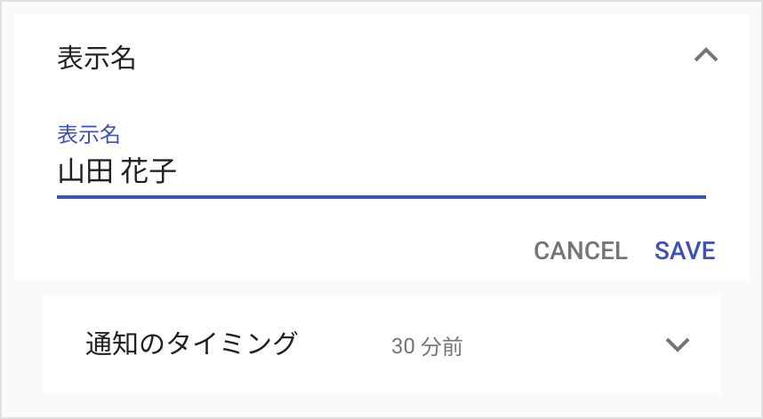

出典 / Source: m1.material.io/components/expansion-panels.html（2026-11-13 参照）。寸法: 項目の文字 15sp・補足 12sp（54% 黒）、区切り 1dp、開閉の矢印 24dp、余白 上下 16dp・左右 24dp。保存とキャンセルの規定は本文になし。色と書体は M1 の初期値（Indigo 500・Roboto）で KM1 が再描画。/ Redrawn by KM1 from the published specs.